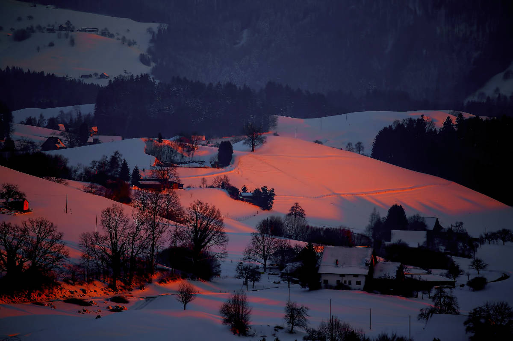

L'harmattan
Leave getting wet or find a shelter
Sunny
☰
Home
Preston
Soda Springs
Fish Haven
Storm Center
Gallery
House on a Hill
original by
Peter Hammer
Walk on The Flower Road
original by
Aaron Brunhofer
Mountains in The Distance
original by
Keghan Crossland

In The Winter of Our Discontent
original by
Ricardo Gomez Angel
A View of The City
original by
Mathew Waters
Take a Stroll to Find The End of The Rainbow
original by
Asa Rodger